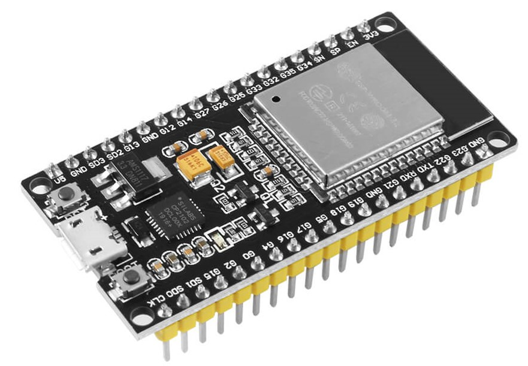
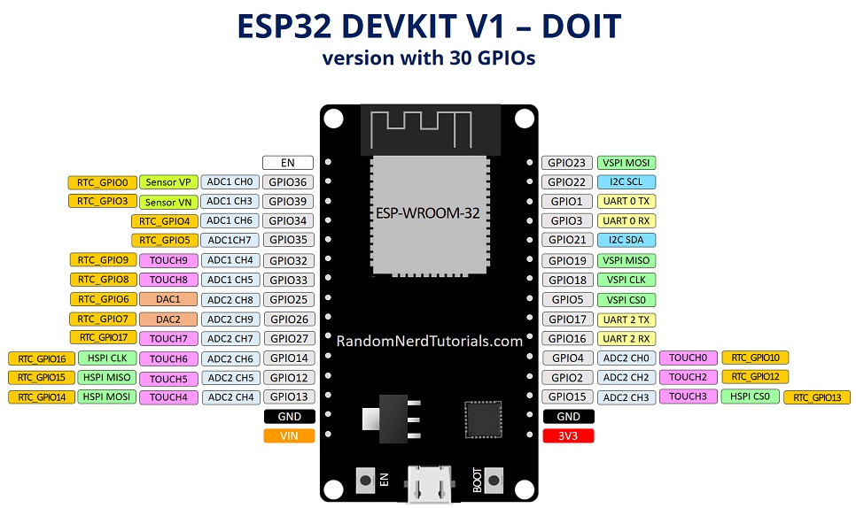

El ESP32 DevKit V1 es una plataforma de desarrollo basada en el chip ESP32 de Espressif.
Incluye conectividad Wi-Fi y Bluetooth, siendo ideal para proyectos de IoT y aplicaciones de bajo consumo energético.

Características Principales
Microprocesador: Xtensa® dual-core de 32 bits.
Frecuencia de Reloj: Hasta 240 MHz.
Memoria RAM: 520 KB SRAM.
Memoria Flash: 4 MB.
Conectividad: Wi-Fi 802.11 b/g/n y Bluetooth 4.2 BLE.
Voltaje de Operación: 3.3V.
Pines de Entrada/Salida: 34 GPIO.
Especificaciones Técnicas
Especificación
Detalle
Microprocesador
Xtensa® dual-core LX6
Frecuencia
Hasta 240 MHz
Memoria Flash
4 MB
RAM
520 KB SRAM
Bluetooth
BLE y Clásico
Wi-Fi
802.11 b/g/n
Configuración de Pines
Diagrama de los pines del ESP32 DevKit V1:

Algunos pines clave incluyen ADC, DAC, UART, SPI, y pines GPIO configurables para E/S digitales y PWM.